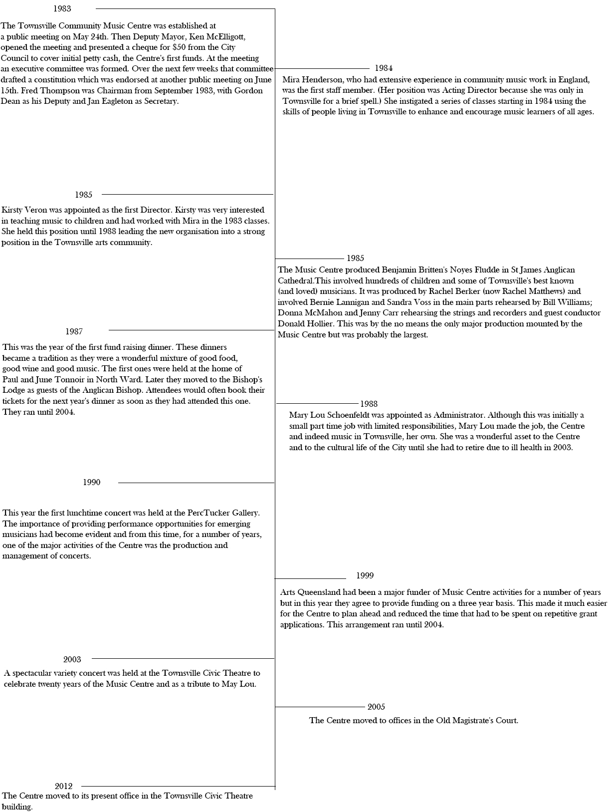

The Townsville Community Music Centre celebrated its 30th year in 2013.
It has been constantly changing over the years to keep up to date with the musical tastes and needs of the Townsville community. As part of the relocation of the Music Centre to the Civic Theatre, Bronia Renison and Jean Dartnall, both librarians, have assessed the old collection of sheet music, books and recorded music which the centre has been storing, unused, for many years. Sometimes older things have to be discarded to make way for the new, but the Music Centre is aware that older material may still have value.
The National Library of Australia has an online catalogue (TROVE) that lists not only its own holdings but also information about items held by many other libraries around Australia. Using this catalogue Bronia and Jean have identified at least 150 items of music that are not held by any of the country's major libraries. These items have been donated to the National Library to include in their collection and thus made available to all historians and musicians.
Also discovered in the old collection were some pieces relevant to North Queensland. Local musicians performed these at a musical social afternoon on Sunday April 21st in C2 at the Civic Theatre. The remaining sheet music, books and CDs were put on display and distributed free of charge to the local music community.
